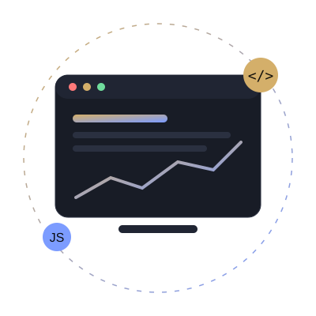

Career background
Banking customer service and ID verification at NatWest, high-volume phone support at Co-op and premium retail at Selfridges.
A First-Class Business Management with Innovation and Technology student at the University of Salford, combining commercial customer-facing experience with practical skills in web development, data and digital transformation.

I am a second-year undergraduate studying BSc (Hons) Business Management with Innovation and Technology at the University of Salford, where I achieved a First-Class 79% average in my first year. My degree sits where business strategy meets technology, and that is exactly where I want to build my career.
Alongside my studies I have worked in demanding customer-facing roles at NatWest, Co-op and Selfridges. These roles taught me how organisations actually run day to day, why customer experience drives revenue, and how small process changes can save real time and money.
Outside of work I build things. I have designed a custom trading indicator, built a personal life dashboard, and I film and edit my own camera content. I learn fastest by making something real.
Banking customer service and ID verification at NatWest, high-volume phone support at Co-op and premium retail at Selfridges.
Digital transformation, data visualisation, financial markets and algorithmic trading, web development and content creation.
Secure a 2027 summer internship or placement in technology consulting, IT audit or digital banking, then graduate into a role leading digital change in a commercial organisation.
I understand customers because I have served thousands of them, from bank account holders to luxury shoppers.
Microsoft Office Specialist certified, with HTML, CSS, JavaScript, Power BI and data analysis skills. I am comfortable picking up new tools and applying them to business problems.
I break messy problems into clear steps, test ideas quickly, and measure whether they actually worked.